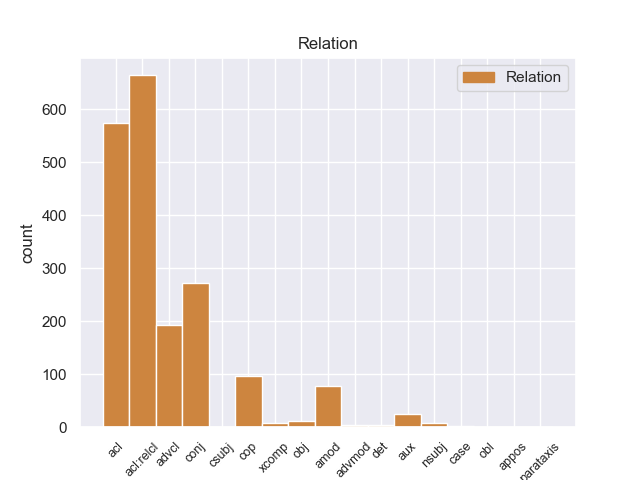
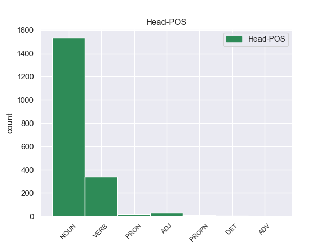
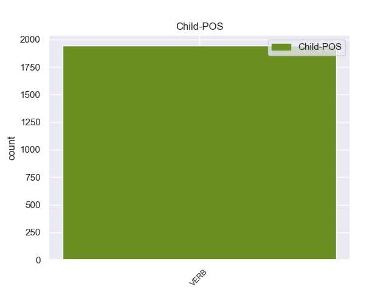

Distribution of features within this leaf



Agreement Rules sorted by frequency.
- When the dependent token is the adjectival clause(acl) of the head token, and the dependent token is VERB.
1 Saint _ _ _ _ 0 _ _ _
2 - _ _ _ _ 0 _ _ _
3 Hippolyte _ _ _ _ 0 _ _ _
4 ( _ _ _ _ 0 _ _ _
5 en _ _ _ _ 0 _ _ _
6 occitano _ _ _ _ 0 _ _ _
7 Sent _ _ _ _ 0 _ _ _
8 Ipòli _ _ _ _ 0 _ _ _
9 ) _ _ _ _ 0 _ _ _
10 es _ _ _ _ 0 _ _ _
11 una _ _ _ _ 0 _ _ _
12 población población NOUN _ Gender=Fem|Number=Sing 0 _ _ _
13 y _ _ _ _ 0 _ _ _
14 comuna _ _ _ _ 0 _ _ _
15 francesa _ _ _ _ 0 _ _ _
16 , _ _ _ _ 0 _ _ _
17 situada situada VERB _ Gender=Fem|Number=Sing|VerbForm=Part 12 acl _ _
18 en _ _ _ _ 0 _ _ _
19 la _ _ _ _ 0 _ _ _
20 región _ _ _ _ 0 _ _ _
21 de _ _ _ _ 0 _ _ _
22 Aquitania _ _ _ _ 0 _ _ _
23 , _ _ _ _ 0 _ _ _
24 departamento _ _ _ _ 0 _ _ _
25 de _ _ _ _ 0 _ _ _
26 Gironda _ _ _ _ 0 _ _ _
27 , _ _ _ _ 0 _ _ _
28 en _ _ _ _ 0 _ _ _
29 el _ _ _ _ 0 _ _ _
30 distrito _ _ _ _ 0 _ _ _
31 de _ _ _ _ 0 _ _ _
32 Libourne _ _ _ _ 0 _ _ _
33 y _ _ _ _ 0 _ _ _
34 cantón _ _ _ _ 0 _ _ _
35 de _ _ _ _ 0 _ _ _
36 Castillon _ _ _ _ 0 _ _ _
37 - _ _ _ _ 0 _ _ _
38 la _ _ _ _ 0 _ _ _
39 - _ _ _ _ 0 _ _ _
40 Bataille _ _ _ _ 0 _ _ _
41 . _ _ _ _ 0 _ _ _
1 En _ _ _ _ 0 _ _ _
2 1991 _ _ _ _ 0 _ _ _
3 , _ _ _ _ 0 _ _ _
4 como _ _ _ _ 0 _ _ _
5 ya _ _ _ _ 0 _ _ _
6 está _ _ _ _ 0 _ _ _
7 indicado _ _ _ _ 0 _ _ _
8 en _ _ _ _ 0 _ _ _
9 el _ _ _ _ 0 _ _ _
10 párrafo _ _ _ _ 0 _ _ _
11 anterior _ _ _ _ 0 _ _ _
12 , _ _ _ _ 0 _ _ _
13 se _ _ _ _ 0 _ _ _
14 creó _ _ _ _ 0 _ _ _
15 un _ _ _ _ 0 _ _ _
16 equipo equipo NOUN _ Gender=Masc|Number=Sing 0 _ _ _
17 ad _ _ _ _ 0 _ _ _
18 hoc _ _ _ _ 0 _ _ _
19 para _ _ _ _ 0 _ _ _
20 averiguar _ _ _ _ 0 _ _ _
21 como _ _ _ _ 0 _ _ _
22 se _ _ _ _ 0 _ _ _
23 podía _ _ _ _ 0 _ _ _
24 desarrollar _ _ _ _ 0 _ _ _
25 el _ _ _ _ 0 _ _ _
26 Dialogo _ _ _ _ 0 _ _ _
27 Social _ _ _ _ 0 _ _ _
28 , _ _ _ _ 0 _ _ _
29 este _ _ _ _ 0 _ _ _
30 equipo _ _ _ _ 0 _ _ _
31 estaba _ _ _ _ 0 _ _ _
32 formado formado VERB _ Gender=Masc|Number=Sing|Tense=Past|VerbForm=Part 16 acl:relcl _ _
33 por _ _ _ _ 0 _ _ _
34 representantes _ _ _ _ 0 _ _ _
35 de _ _ _ _ 0 _ _ _
36 todas _ _ _ _ 0 _ _ _
37 las _ _ _ _ 0 _ _ _
38 organizaciones _ _ _ _ 0 _ _ _
39 relacionadas _ _ _ _ 0 _ _ _
40 con _ _ _ _ 0 _ _ _
41 CES _ _ _ _ 0 _ _ _
42 , _ _ _ _ 0 _ _ _
43 UNICE _ _ _ _ 0 _ _ _
44 y _ _ _ _ 0 _ _ _
45 CEEP _ _ _ _ 0 _ _ _
46 ; _ _ _ _ 0 _ _ _
1 Un _ _ _ _ 0 _ _ _
2 buen _ _ _ _ 0 _ _ _
3 almacén almacén NOUN _ Gender=Masc|Number=Sing 0 _ _ _
4 de _ _ _ _ 0 _ _ _
5 maderas _ _ _ _ 0 _ _ _
6 con _ _ _ _ 0 _ _ _
7 mucha _ _ _ _ 0 _ _ _
8 variedad _ _ _ _ 0 _ _ _
9 y _ _ _ _ 0 _ _ _
10 muy _ _ _ _ 0 _ _ _
11 bien _ _ _ _ 0 _ _ _
12 atendido atendido VERB _ Gender=Masc|Number=Sing 3 conj _ _
13 . _ _ _ _ 0 _ _ _
1 Mientras _ _ _ _ 0 _ _ _
2 tanto _ _ _ _ 0 _ _ _
3 , _ _ _ _ 0 _ _ _
4 los _ _ _ _ 0 _ _ _
5 Los _ _ _ _ 0 _ _ _
6 Angeles _ _ _ _ 0 _ _ _
7 Lakers _ _ _ _ 0 _ _ _
8 , _ _ _ _ 0 _ _ _
9 que _ _ _ _ 0 _ _ _
10 habían _ _ _ _ 0 _ _ _
11 elegido elegido VERB _ Gender=Masc|Number=Sing|Tense=Past|VerbForm=Part 0 _ _ _
12 a _ _ _ _ 0 _ _ _
13 el _ _ _ _ 0 _ _ _
14 jugador _ _ _ _ 0 _ _ _
15 en _ _ _ _ 0 _ _ _
16 en _ _ _ _ 0 _ _ _
17 la _ _ _ _ 0 _ _ _
18 trigésimo _ _ _ _ 0 _ _ _
19 primera _ _ _ _ 0 _ _ _
20 posición _ _ _ _ 0 _ _ _
21 de _ _ _ _ 0 _ _ _
22 el _ _ _ _ 0 _ _ _
23 Draft _ _ _ _ 0 _ _ _
24 de _ _ _ _ 0 _ _ _
25 la _ _ _ _ 0 _ _ _
26 NBA _ _ _ _ 0 _ _ _
27 de _ _ _ _ 0 _ _ _
28 1973 _ _ _ _ 0 _ _ _
29 , _ _ _ _ 0 _ _ _
30 habían _ _ _ _ 0 _ _ _
31 traspasado traspasado VERB _ Gender=Masc|Number=Sing|Tense=Past|VerbForm=Part 11 advcl _ _
32 sus _ _ _ _ 0 _ _ _
33 derechos _ _ _ _ 0 _ _ _
34 a _ _ _ _ 0 _ _ _
35 Cleveland _ _ _ _ 0 _ _ _
36 Cavaliers _ _ _ _ 0 _ _ _
37 a _ _ _ _ 0 _ _ _
38 cambio _ _ _ _ 0 _ _ _
39 de _ _ _ _ 0 _ _ _
40 una _ _ _ _ 0 _ _ _
41 futura _ _ _ _ 0 _ _ _
42 primera _ _ _ _ 0 _ _ _
43 ronda _ _ _ _ 0 _ _ _
44 de _ _ _ _ 0 _ _ _
45 el _ _ _ _ 0 _ _ _
46 draft _ _ _ _ 0 _ _ _
47 . _ _ _ _ 0 _ _ _
1 Está _ _ _ _ 0 _ _ _
2 considerado considerado VERB _ Gender=Masc|Number=Sing|VerbForm=Part 3 cop _ _
3 uno uno PRON _ Gender=Masc|Number=Sing|VerbForm=Part 0 _ _ _
4 de _ _ _ _ 0 _ _ _
5 los _ _ _ _ 0 _ _ _
6 mejores _ _ _ _ 0 _ _ _
7 jugadores _ _ _ _ 0 _ _ _
8 de _ _ _ _ 0 _ _ _
9 la _ _ _ _ 0 _ _ _
10 historia _ _ _ _ 0 _ _ _
11 de _ _ _ _ 0 _ _ _
12 Dinamarca _ _ _ _ 0 _ _ _
13 , _ _ _ _ 0 _ _ _
14 junto _ _ _ _ 0 _ _ _
15 a _ _ _ _ 0 _ _ _
16 otras _ _ _ _ 0 _ _ _
17 grandes _ _ _ _ 0 _ _ _
18 estrellas _ _ _ _ 0 _ _ _
19 como _ _ _ _ 0 _ _ _
20 Michael _ _ _ _ 0 _ _ _
21 Laudrup _ _ _ _ 0 _ _ _
22 , _ _ _ _ 0 _ _ _
23 Peter _ _ _ _ 0 _ _ _
24 Schmeichel _ _ _ _ 0 _ _ _
25 o _ _ _ _ 0 _ _ _
26 Allan _ _ _ _ 0 _ _ _
27 Simonsen _ _ _ _ 0 _ _ _
28 . _ _ _ _ 0 _ _ _
1 Esta _ _ _ _ 0 _ _ _
2 se _ _ _ _ 0 _ _ _
3 hizo _ _ _ _ 0 _ _ _
4 la _ _ _ _ 0 _ _ _
5 parte parte NOUN _ Gender=Fem|Number=Sing 0 _ _ _
6 de _ _ _ _ 0 _ _ _
7 el _ _ _ _ 0 _ _ _
8 Decapolis _ _ _ _ 0 _ _ _
9 y _ _ _ _ 0 _ _ _
10 se _ _ _ _ 0 _ _ _
11 puso _ _ _ _ 0 _ _ _
12 cada _ _ _ _ 0 _ _ _
13 vez _ _ _ _ 0 _ _ _
14 más _ _ _ _ 0 _ _ _
15 competitiva competitiva VERB _ Gender=Fem|Number=Sing|VerbForm=Part 5 amod _ _
16 con _ _ _ _ 0 _ _ _
17 Petra _ _ _ _ 0 _ _ _
18 la _ _ _ _ 0 _ _ _
19 más _ _ _ _ 0 _ _ _
20 vieja _ _ _ _ 0 _ _ _
21 ciudad _ _ _ _ 0 _ _ _
22 comercial _ _ _ _ 0 _ _ _
23 de _ _ _ _ 0 _ _ _
24 Jordania _ _ _ _ 0 _ _ _
25 . _ _ _ _ 0 _ _ _
1 Camelot _ _ _ _ 0 _ _ _
2 había _ _ _ _ 0 _ _ _
3 estado estado VERB _ Gender=Masc|Number=Sing|Tense=Past|VerbForm=Part 4 aux _ _
4 trabajando trabajando VERB _ Gender=Masc|Number=Sing|Tense=Past|VerbForm=Part 0 _ _ _
5 en _ _ _ _ 0 _ _ _
6 una _ _ _ _ 0 _ _ _
7 versión _ _ _ _ 0 _ _ _
8 previa _ _ _ _ 0 _ _ _
9 de _ _ _ _ 0 _ _ _
10 Mario _ _ _ _ 0 _ _ _
11 Tennis _ _ _ _ 0 _ _ _
12 para _ _ _ _ 0 _ _ _
13 la _ _ _ _ 0 _ _ _
14 consola _ _ _ _ 0 _ _ _
15 Nintendo _ _ _ _ 0 _ _ _
16 GameCube _ _ _ _ 0 _ _ _
17 , _ _ _ _ 0 _ _ _
18 sin _ _ _ _ 0 _ _ _
19 embargo _ _ _ _ 0 _ _ _
20 pausó _ _ _ _ 0 _ _ _
21 el _ _ _ _ 0 _ _ _
22 proyecto _ _ _ _ 0 _ _ _
23 para _ _ _ _ 0 _ _ _
24 reiniciar _ _ _ _ 0 _ _ _
25 lo _ _ _ _ 0 _ _ _
26 desde _ _ _ _ 0 _ _ _
27 cero _ _ _ _ 0 _ _ _
28 , _ _ _ _ 0 _ _ _
29 esta _ _ _ _ 0 _ _ _
30 vez _ _ _ _ 0 _ _ _
31 usando _ _ _ _ 0 _ _ _
32 ideas _ _ _ _ 0 _ _ _
33 y _ _ _ _ 0 _ _ _
34 tecnología _ _ _ _ 0 _ _ _
35 provenientes _ _ _ _ 0 _ _ _
36 de _ _ _ _ 0 _ _ _
37 Mario _ _ _ _ 0 _ _ _
38 Golf _ _ _ _ 0 _ _ _
39 : _ _ _ _ 0 _ _ _
40 Toadstool _ _ _ _ 0 _ _ _
41 Tour _ _ _ _ 0 _ _ _
42 , _ _ _ _ 0 _ _ _
43 el _ _ _ _ 0 _ _ _
44 cual _ _ _ _ 0 _ _ _
45 se _ _ _ _ 0 _ _ _
46 desarrolló _ _ _ _ 0 _ _ _
47 de _ _ _ _ 0 _ _ _
48 manera _ _ _ _ 0 _ _ _
49 simultánea _ _ _ _ 0 _ _ _
50 a _ _ _ _ 0 _ _ _
51 Power _ _ _ _ 0 _ _ _
52 Tennis _ _ _ _ 0 _ _ _
53 . _ _ _ _ 0 _ _ _
1 Para _ _ _ _ 0 _ _ _
2 el _ _ _ _ 0 _ _ _
3 chef _ _ _ _ 0 _ _ _
4 Raül _ _ _ _ 0 _ _ _
5 Balam _ _ _ _ 0 _ _ _
6 , _ _ _ _ 0 _ _ _
7 que _ _ _ _ 0 _ _ _
8 ha _ _ _ _ 0 _ _ _
9 trabajado trabajado VERB _ Gender=Masc|Number=Sing|Tense=Past|VerbForm=Part 0 _ _ _
10 codo codo VERB _ Gender=Masc|Number=Sing 9 obj _ _
11 con _ _ _ _ 0 _ _ _
12 codo _ _ _ _ 0 _ _ _
13 con _ _ _ _ 0 _ _ _
14 su _ _ _ _ 0 _ _ _
15 madre _ _ _ _ 0 _ _ _
16 durante _ _ _ _ 0 _ _ _
17 años _ _ _ _ 0 _ _ _
18 y _ _ _ _ 0 _ _ _
19 que _ _ _ _ 0 _ _ _
20 está _ _ _ _ 0 _ _ _
21 a _ _ _ _ 0 _ _ _
22 el _ _ _ _ 0 _ _ _
23 frente _ _ _ _ 0 _ _ _
24 de _ _ _ _ 0 _ _ _
25 el _ _ _ _ 0 _ _ _
26 restaurante _ _ _ _ 0 _ _ _
27 desde _ _ _ _ 0 _ _ _
28 su _ _ _ _ 0 _ _ _
29 inauguración _ _ _ _ 0 _ _ _
30 , _ _ _ _ 0 _ _ _
31 la _ _ _ _ 0 _ _ _
32 alegría _ _ _ _ 0 _ _ _
33 es _ _ _ _ 0 _ _ _
34 mayúscula _ _ _ _ 0 _ _ _
35 . _ _ _ _ 0 _ _ _
1 El _ _ _ _ 0 _ _ _
2 restaurante _ _ _ _ 0 _ _ _
3 Enoteca _ _ _ _ 0 _ _ _
4 de _ _ _ _ 0 _ _ _
5 el _ _ _ _ 0 _ _ _
6 Hotel _ _ _ _ 0 _ _ _
7 Arts _ _ _ _ 0 _ _ _
8 Barcelona _ _ _ _ 0 _ _ _
9 , _ _ _ _ 0 _ _ _
10 que _ _ _ _ 0 _ _ _
11 regenta _ _ _ _ 0 _ _ _
12 Paco _ _ _ _ 0 _ _ _
13 Pérez _ _ _ _ 0 _ _ _
14 , _ _ _ _ 0 _ _ _
15 ha _ _ _ _ 0 _ _ _
16 vuelto vueer VERB _ Gender=Masc|Number=Sing|Tense=Past|VerbForm=Part 0 _ _ _
17 a _ _ _ _ 0 _ _ _
18 ser _ _ _ _ 0 _ _ _
19 reconocido reconocido VERB _ Gender=Masc|Number=Sing|VerbForm=Part 16 xcomp _ _
20 con _ _ _ _ 0 _ _ _
21 una _ _ _ _ 0 _ _ _
22 estrella _ _ _ _ 0 _ _ _
23 Michelin _ _ _ _ 0 _ _ _
24 que _ _ _ _ 0 _ _ _
25 ya _ _ _ _ 0 _ _ _
26 le _ _ _ _ 0 _ _ _
27 fue _ _ _ _ 0 _ _ _
28 otorgada _ _ _ _ 0 _ _ _
29 el _ _ _ _ 0 _ _ _
30 año _ _ _ _ 0 _ _ _
31 pasado _ _ _ _ 0 _ _ _
32 en _ _ _ _ 0 _ _ _
33 la _ _ _ _ 0 _ _ _
34 edición _ _ _ _ 0 _ _ _
35 de _ _ _ _ 0 _ _ _
36 la _ _ _ _ 0 _ _ _
37 guía _ _ _ _ 0 _ _ _
38 2010 _ _ _ _ 0 _ _ _
39 . _ _ _ _ 0 _ _ _
1 Ella _ _ _ _ 0 _ _ _
2 también _ _ _ _ 0 _ _ _
3 fue _ _ _ _ 0 _ _ _
4 la _ _ _ _ 0 _ _ _
5 primera _ _ _ _ 0 _ _ _
6 mujer mujer NOUN _ Gender=Fem|Number=Sing 0 _ _ _
7 en _ _ _ _ 0 _ _ _
8 volar _ _ _ _ 0 _ _ _
9 a _ _ _ _ 0 _ _ _
10 bordo _ _ _ _ 0 _ _ _
11 de _ _ _ _ 0 _ _ _
12 el _ _ _ _ 0 _ _ _
13 Dornier _ _ _ _ 0 _ _ _
14 DO _ _ _ _ 0 _ _ _
15 - _ _ _ _ 0 _ _ _
16 X _ _ _ _ 0 _ _ _
17 , _ _ _ _ 0 _ _ _
18 y _ _ _ _ 0 _ _ _
19 fue _ _ _ _ 0 _ _ _
20 una uno VERB _ Definite=Ind|Gender=Fem|Number=Sing|PronType=Art 6 det _ _
21 de _ _ _ _ 0 _ _ _
22 las _ _ _ _ 0 _ _ _
23 11 _ _ _ _ 0 _ _ _
24 mujeres _ _ _ _ 0 _ _ _
25 a _ _ _ _ 0 _ _ _
26 bordo _ _ _ _ 0 _ _ _
27 de _ _ _ _ 0 _ _ _
28 el _ _ _ _ 0 _ _ _
29 primer _ _ _ _ 0 _ _ _
30 vuelo _ _ _ _ 0 _ _ _
31 de _ _ _ _ 0 _ _ _
32 el _ _ _ _ 0 _ _ _
33 Hindenburg _ _ _ _ 0 _ _ _
34 A _ _ _ _ 0 _ _ _
35 pesar _ _ _ _ 0 _ _ _
36 de _ _ _ _ 0 _ _ _
37 el _ _ _ _ 0 _ _ _
38 fin _ _ _ _ 0 _ _ _
39 de _ _ _ _ 0 _ _ _
40 interés _ _ _ _ 0 _ _ _
41 público _ _ _ _ 0 _ _ _
42 por _ _ _ _ 0 _ _ _
43 las _ _ _ _ 0 _ _ _
44 aeronaves _ _ _ _ 0 _ _ _
45 desapraedce _ _ _ _ 0 _ _ _
46 un _ _ _ _ 0 _ _ _
47 poco _ _ _ _ 0 _ _ _
48 de _ _ _ _ 0 _ _ _
49 el _ _ _ _ 0 _ _ _
50 medio _ _ _ _ 0 _ _ _
51 aeronáutico _ _ _ _ 0 _ _ _
52 debido _ _ _ _ 0 _ _ _
53 a _ _ _ _ 0 _ _ _
54 el _ _ _ _ 0 _ _ _
55 desastre _ _ _ _ 0 _ _ _
56 de _ _ _ _ 0 _ _ _
57 el _ _ _ _ 0 _ _ _
58 Hindenburg _ _ _ _ 0 _ _ _
59 , _ _ _ _ 0 _ _ _
60 aún _ _ _ _ 0 _ _ _
61 Adams _ _ _ _ 0 _ _ _
62 siempre _ _ _ _ 0 _ _ _
63 estuvo _ _ _ _ 0 _ _ _
64 ansiosa _ _ _ _ 0 _ _ _
65 de _ _ _ _ 0 _ _ _
66 volar _ _ _ _ 0 _ _ _
67 en _ _ _ _ 0 _ _ _
68 aeronaves _ _ _ _ 0 _ _ _
69 . _ _ _ _ 0 _ _ _
1 En _ _ _ _ 0 _ _ _
2 los _ _ _ _ 0 _ _ _
3 restaurantes _ _ _ _ 0 _ _ _
4 estadounidenses _ _ _ _ 0 _ _ _
5 de _ _ _ _ 0 _ _ _
6 comida _ _ _ _ 0 _ _ _
7 china _ _ _ _ 0 _ _ _
8 , _ _ _ _ 0 _ _ _
9 el _ _ _ _ 0 _ _ _
10 lo lo PRON _ Gender=Masc|Number=Sing 0 _ _ _
11 mein mein VERB _ Gender=Masc|Number=Sing 10 nsubj _ _
12 es _ _ _ _ 0 _ _ _
13 muy _ _ _ _ 0 _ _ _
14 popular _ _ _ _ 0 _ _ _
15 como _ _ _ _ 0 _ _ _
16 una _ _ _ _ 0 _ _ _
17 comida _ _ _ _ 0 _ _ _
18 take _ _ _ _ 0 _ _ _
19 - _ _ _ _ 0 _ _ _
20 out _ _ _ _ 0 _ _ _
21 . _ _ _ _ 0 _ _ _
1 El _ _ _ _ 0 _ _ _
2 29 _ _ _ _ 0 _ _ _
3 de _ _ _ _ 0 _ _ _
4 septiembre _ _ _ _ 0 _ _ _
5 de _ _ _ _ 0 _ _ _
6 1364 _ _ _ _ 0 _ _ _
7 Bertrand _ _ _ _ 0 _ _ _
8 Du _ _ _ _ 0 _ _ _
9 Guesclin _ _ _ _ 0 _ _ _
10 y _ _ _ _ 0 _ _ _
11 Carlos _ _ _ _ 0 _ _ _
12 de _ _ _ _ 0 _ _ _
13 Blois _ _ _ _ 0 _ _ _
14 fueron _ _ _ _ 0 _ _ _
15 gravemente gravemente VERB _ Gender=Masc|Number=Sing|Tense=Past|VerbForm=Part 16 advmod _ _
16 derrotados derrotado VERB _ Gender=Masc|Number=Sing|VerbForm=Part 0 _ _ _
17 en _ _ _ _ 0 _ _ _
18 la _ _ _ _ 0 _ _ _
19 Batalla _ _ _ _ 0 _ _ _
20 de _ _ _ _ 0 _ _ _
21 Auray _ _ _ _ 0 _ _ _
22 por _ _ _ _ 0 _ _ _
23 Juan _ _ _ _ 0 _ _ _
24 V _ _ _ _ 0 _ _ _
25 de _ _ _ _ 0 _ _ _
26 Bretaña _ _ _ _ 0 _ _ _
27 ( _ _ _ _ 0 _ _ _
28 hijo _ _ _ _ 0 _ _ _
29 de _ _ _ _ 0 _ _ _
30 Juan _ _ _ _ 0 _ _ _
31 de _ _ _ _ 0 _ _ _
32 Monfort _ _ _ _ 0 _ _ _
33 , _ _ _ _ 0 _ _ _
34 que _ _ _ _ 0 _ _ _
35 lo _ _ _ _ 0 _ _ _
36 había _ _ _ _ 0 _ _ _
37 heredado _ _ _ _ 0 _ _ _
38 ) _ _ _ _ 0 _ _ _
39 y _ _ _ _ 0 _ _ _
40 sir _ _ _ _ 0 _ _ _
41 John _ _ _ _ 0 _ _ _
42 Chandos _ _ _ _ 0 _ _ _
43 , _ _ _ _ 0 _ _ _
44 quienes _ _ _ _ 0 _ _ _
45 lucharon _ _ _ _ 0 _ _ _
46 bajo _ _ _ _ 0 _ _ _
47 el _ _ _ _ 0 _ _ _
48 comando _ _ _ _ 0 _ _ _
49 político _ _ _ _ 0 _ _ _
50 y _ _ _ _ 0 _ _ _
51 militar _ _ _ _ 0 _ _ _
52 de _ _ _ _ 0 _ _ _
53 la _ _ _ _ 0 _ _ _
54 madre _ _ _ _ 0 _ _ _
55 de _ _ _ _ 0 _ _ _
56 el _ _ _ _ 0 _ _ _
57 primero _ _ _ _ 0 _ _ _
58 , _ _ _ _ 0 _ _ _
59 Juana _ _ _ _ 0 _ _ _
60 de _ _ _ _ 0 _ _ _
61 Dreux _ _ _ _ 0 _ _ _
62 . _ _ _ _ 0 _ _ _
1 Pese _ _ _ _ 0 _ _ _
2 a _ _ _ _ 0 _ _ _
3 que _ _ _ _ 0 _ _ _
4 en _ _ _ _ 0 _ _ _
5 la _ _ _ _ 0 _ _ _
6 actualidad _ _ _ _ 0 _ _ _
7 Action _ _ _ _ 0 _ _ _
8 Comics _ _ _ _ 0 _ _ _
9 es _ _ _ _ 0 _ _ _
10 un _ _ _ _ 0 _ _ _
11 título título NOUN _ Gender=Masc|Number=Sing 0 _ _ _
12 mensual _ _ _ _ 0 _ _ _
13 dedicado _ _ _ _ 0 _ _ _
14 a _ _ _ _ 0 _ _ _
15 Superman _ _ _ _ 0 _ _ _
16 , _ _ _ _ 0 _ _ _
17 comenzó _ _ _ _ 0 _ _ _
18 siendo siendo VERB _ Gender=Masc|Number=Sing|Tense=Past|VerbForm=Part 11 case _ _
19 una _ _ _ _ 0 _ _ _
20 antología _ _ _ _ 0 _ _ _
21 , _ _ _ _ 0 _ _ _
22 a _ _ _ _ 0 _ _ _
23 el _ _ _ _ 0 _ _ _
24 igual _ _ _ _ 0 _ _ _
25 que _ _ _ _ 0 _ _ _
26 muchos _ _ _ _ 0 _ _ _
27 de _ _ _ _ 0 _ _ _
28 los _ _ _ _ 0 _ _ _
29 primeros _ _ _ _ 0 _ _ _
30 cómics _ _ _ _ 0 _ _ _
31 . _ _ _ _ 0 _ _ _
1 Conocido _ _ _ _ 0 _ _ _
2 con _ _ _ _ 0 _ _ _
3 el _ _ _ _ 0 _ _ _
4 pseudónimo _ _ _ _ 0 _ _ _
5 de _ _ _ _ 0 _ _ _
6 " _ _ _ _ 0 _ _ _
7 Ruben _ _ _ _ 0 _ _ _
8 Rojas _ _ _ _ 0 _ _ _
9 " _ _ _ _ 0 _ _ _
10 , _ _ _ _ 0 _ _ _
11 Cañas _ _ _ _ 0 _ _ _
12 fue _ _ _ _ 0 _ _ _
13 uno uno VERB _ Gender=Masc|Number=Sing|VerbForm=Part 0 _ _ _
14 de _ _ _ _ 0 _ _ _
15 los _ _ _ _ 0 _ _ _
16 miembros _ _ _ _ 0 _ _ _
17 de _ _ _ _ 0 _ _ _
18 la _ _ _ _ 0 _ _ _
19 Comisión _ _ _ _ 0 _ _ _
20 de _ _ _ _ 0 _ _ _
21 Negociación _ _ _ _ 0 _ _ _
22 que _ _ _ _ 0 _ _ _
23 firmó _ _ _ _ 0 _ _ _
24 los _ _ _ _ 0 _ _ _
25 Acuerdos _ _ _ _ 0 _ _ _
26 de _ _ _ _ 0 _ _ _
27 Paz _ _ _ _ 0 _ _ _
28 en _ _ _ _ 0 _ _ _
29 1992 _ _ _ _ 0 _ _ _
30 también _ _ _ _ 0 _ _ _
31 fue _ _ _ _ 0 _ _ _
32 miembro miembro VERB _ Gender=Masc|Number=Sing 13 parataxis _ _
33 de _ _ _ _ 0 _ _ _
34 la _ _ _ _ 0 _ _ _
35 Comisión _ _ _ _ 0 _ _ _
36 Política _ _ _ _ 0 _ _ _
37 y _ _ _ _ 0 _ _ _
38 de _ _ _ _ 0 _ _ _
39 el _ _ _ _ 0 _ _ _
40 Consejo _ _ _ _ 0 _ _ _
41 Nacional _ _ _ _ 0 _ _ _
42 de _ _ _ _ 0 _ _ _
43 el _ _ _ _ 0 _ _ _
44 Frente _ _ _ _ 0 _ _ _
45 Farabundo _ _ _ _ 0 _ _ _
46 Martí _ _ _ _ 0 _ _ _
47 para _ _ _ _ 0 _ _ _
48 la _ _ _ _ 0 _ _ _
49 Liberación _ _ _ _ 0 _ _ _
50 Nacional _ _ _ _ 0 _ _ _
51 ( _ _ _ _ 0 _ _ _
52 FMLN _ _ _ _ 0 _ _ _
53 ) _ _ _ _ 0 _ _ _
54 , _ _ _ _ 0 _ _ _
55 el _ _ _ _ 0 _ _ _
56 partido _ _ _ _ 0 _ _ _
57 de _ _ _ _ 0 _ _ _
58 izquierda _ _ _ _ 0 _ _ _
59 que _ _ _ _ 0 _ _ _
60 a _ _ _ _ 0 _ _ _
61 la _ _ _ _ 0 _ _ _
62 postre _ _ _ _ 0 _ _ _
63 se _ _ _ _ 0 _ _ _
64 convertiría _ _ _ _ 0 _ _ _
65 en _ _ _ _ 0 _ _ _
66 el _ _ _ _ 0 _ _ _
67 principal _ _ _ _ 0 _ _ _
68 de _ _ _ _ 0 _ _ _
69 esta _ _ _ _ 0 _ _ _
70 tendencia _ _ _ _ 0 _ _ _
71 en _ _ _ _ 0 _ _ _
72 El _ _ _ _ 0 _ _ _
73 Salvador _ _ _ _ 0 _ _ _
74 . _ _ _ _ 0 _ _ _
Disagree Examples:
1 En _ _ _ _ 0 _ _ _
2 este _ _ _ _ 0 _ _ _
3 momento _ _ _ _ 0 _ _ _
4 , _ _ _ _ 0 _ _ _
5 expuso _ _ _ _ 0 _ _ _
6 , _ _ _ _ 0 _ _ _
7 están _ _ _ _ 0 _ _ _
8 en _ _ _ _ 0 _ _ _
9 duda _ _ _ _ 0 _ _ _
10 las _ _ _ _ 0 _ _ _
11 ideas idea NOUN _ Gender=Fem|Number=Plur 0 _ _ _
12 conservadoras _ _ _ _ 0 _ _ _
13 que _ _ _ _ 0 _ _ _
14 se _ _ _ _ 0 _ _ _
15 han _ _ _ _ 0 _ _ _
16 aplicado aplicar VERB _ Gender=Masc|Number=Sing|Tense=Past|VerbForm=Part 11 acl:relcl _ _
17 en _ _ _ _ 0 _ _ _
18 México _ _ _ _ 0 _ _ _
19 , _ _ _ _ 0 _ _ _
20 debido _ _ _ _ 0 _ _ _
21 a _ _ _ _ 0 _ _ _
22 los _ _ _ _ 0 _ _ _
23 resultados _ _ _ _ 0 _ _ _
24 económicos _ _ _ _ 0 _ _ _
25 y _ _ _ _ 0 _ _ _
26 los _ _ _ _ 0 _ _ _
27 abusos _ _ _ _ 0 _ _ _
28 de _ _ _ _ 0 _ _ _
29 intermediarios _ _ _ _ 0 _ _ _
30 financieros _ _ _ _ 0 _ _ _
31 . _ _ _ _ 0 _ _ _
1 A _ _ _ _ 0 _ _ _
2 imitación _ _ _ _ 0 _ _ _
3 de _ _ _ _ 0 _ _ _
4 el _ _ _ _ 0 _ _ _
5 general _ _ _ _ 0 _ _ _
6 Erich _ _ _ _ 0 _ _ _
7 Ludendorff _ _ _ _ 0 _ _ _
8 , _ _ _ _ 0 _ _ _
9 antiguo _ _ _ _ 0 _ _ _
10 comandante _ _ _ _ 0 _ _ _
11 en _ _ _ _ 0 _ _ _
12 jefe _ _ _ _ 0 _ _ _
13 de _ _ _ _ 0 _ _ _
14 el _ _ _ _ 0 _ _ _
15 Ejército _ _ _ _ 0 _ _ _
16 alemán _ _ _ _ 0 _ _ _
17 ( _ _ _ _ 0 _ _ _
18 y _ _ _ _ 0 _ _ _
19 que _ _ _ _ 0 _ _ _
20 por _ _ _ _ 0 _ _ _
21 lo _ _ _ _ 0 _ _ _
22 demás _ _ _ _ 0 _ _ _
23 era _ _ _ _ 0 _ _ _
24 su _ _ _ _ 0 _ _ _
25 primo _ _ _ _ 0 _ _ _
26 carnal _ _ _ _ 0 _ _ _
27 ) _ _ _ _ 0 _ _ _
28 , _ _ _ _ 0 _ _ _
29 von _ _ _ _ 0 _ _ _
30 Hutier _ _ _ _ 0 _ _ _
31 sostuvo _ _ _ _ 0 _ _ _
32 la _ _ _ _ 0 _ _ _
33 tesis tesis NOUN _ Gender=Fem 0 _ _ _
34 de _ _ _ _ 0 _ _ _
35 que _ _ _ _ 0 _ _ _
36 el _ _ _ _ 0 _ _ _
37 ejército _ _ _ _ 0 _ _ _
38 alemán _ _ _ _ 0 _ _ _
39 no _ _ _ _ 0 _ _ _
40 había _ _ _ _ 0 _ _ _
41 sido _ _ _ _ 0 _ _ _
42 derrotado derrotar VERB _ Gender=Masc|Number=Sing|Tense=Past|VerbForm=Part 33 advcl _ _
43 en _ _ _ _ 0 _ _ _
44 los _ _ _ _ 0 _ _ _
45 campos _ _ _ _ 0 _ _ _
46 de _ _ _ _ 0 _ _ _
47 batalla _ _ _ _ 0 _ _ _
48 por _ _ _ _ 0 _ _ _
49 los _ _ _ _ 0 _ _ _
50 Aliados _ _ _ _ 0 _ _ _
51 sino _ _ _ _ 0 _ _ _
52 que _ _ _ _ 0 _ _ _
53 , _ _ _ _ 0 _ _ _
54 por _ _ _ _ 0 _ _ _
55 el _ _ _ _ 0 _ _ _
56 contrario _ _ _ _ 0 _ _ _
57 , _ _ _ _ 0 _ _ _
58 había _ _ _ _ 0 _ _ _
59 recibido _ _ _ _ 0 _ _ _
60 una _ _ _ _ 0 _ _ _
61 " _ _ _ _ 0 _ _ _
62 puñalada _ _ _ _ 0 _ _ _
63 por _ _ _ _ 0 _ _ _
64 la _ _ _ _ 0 _ _ _
65 espalda _ _ _ _ 0 _ _ _
66 " _ _ _ _ 0 _ _ _
67 a _ _ _ _ 0 _ _ _
68 manos _ _ _ _ 0 _ _ _
69 de _ _ _ _ 0 _ _ _
70 unos _ _ _ _ 0 _ _ _
71 presuntos _ _ _ _ 0 _ _ _
72 enemigos _ _ _ _ 0 _ _ _
73 interiores _ _ _ _ 0 _ _ _
74 . _ _ _ _ 0 _ _ _
1 Los _ _ _ _ 0 _ _ _
2 resultados _ _ _ _ 0 _ _ _
3 fantasticos _ _ _ _ 0 _ _ _
4 , _ _ _ _ 0 _ _ _
5 de _ _ _ _ 0 _ _ _
6 verdad _ _ _ _ 0 _ _ _
7 es _ _ _ _ 0 _ _ _
8 que _ _ _ _ 0 _ _ _
9 una _ _ _ _ 0 _ _ _
10 vez _ _ _ _ 0 _ _ _
11 montada _ _ _ _ 0 _ _ _
12 la _ _ _ _ 0 _ _ _
13 cocina _ _ _ _ 0 _ _ _
14 no _ _ _ _ 0 _ _ _
15 me _ _ _ _ 0 _ _ _
16 puedo _ _ _ _ 0 _ _ _
17 creer _ _ _ _ 0 _ _ _
18 los _ _ _ _ 0 _ _ _
19 resultados _ _ _ _ 0 _ _ _
20 , _ _ _ _ 0 _ _ _
21 tengo _ _ _ _ 0 _ _ _
22 una _ _ _ _ 0 _ _ _
23 cocina _ _ _ _ 0 _ _ _
24 muy _ _ _ _ 0 _ _ _
25 comoda _ _ _ _ 0 _ _ _
26 , _ _ _ _ 0 _ _ _
27 con _ _ _ _ 0 _ _ _
28 unas _ _ _ _ 0 _ _ _
29 cositas _ _ _ _ 0 _ _ _
30 que _ _ _ _ 0 _ _ _
31 tuve _ _ _ _ 0 _ _ _
32 que _ _ _ _ 0 _ _ _
33 modificar _ _ _ _ 0 _ _ _
34 que _ _ _ _ 0 _ _ _
35 todo _ _ _ _ 0 _ _ _
36 eso _ _ _ _ 0 _ _ _
37 se _ _ _ _ 0 _ _ _
38 encargaron _ _ _ _ 0 _ _ _
39 ellos _ _ _ _ 0 _ _ _
40 , _ _ _ _ 0 _ _ _
41 la _ _ _ _ 0 _ _ _
42 verdad verdad NOUN _ Gender=Fem|Number=Sing 0 _ _ _
43 es _ _ _ _ 0 _ _ _
44 que _ _ _ _ 0 _ _ _
45 ha _ _ _ _ 0 _ _ _
46 merecido merecer VERB _ Gender=Masc|Number=Sing|Tense=Past|VerbForm=Part 42 csubj _ _
47 la _ _ _ _ 0 _ _ _
48 pena _ _ _ _ 0 _ _ _
49 . _ _ _ _ 0 _ _ _
1 " _ _ _ _ 0 _ _ _
2 Si _ _ _ _ 0 _ _ _
3 ellos _ _ _ _ 0 _ _ _
4 cambian _ _ _ _ 0 _ _ _
5 de _ _ _ _ 0 _ _ _
6 posición _ _ _ _ 0 _ _ _
7 , _ _ _ _ 0 _ _ _
8 nosotros _ _ _ _ 0 _ _ _
9 no _ _ _ _ 0 _ _ _
10 tenemos _ _ _ _ 0 _ _ _
11 una _ _ _ _ 0 _ _ _
12 posición posición NOUN _ Gender=Fem|Number=Sing 0 _ _ _
13 bloqueada _ _ _ _ 0 _ _ _
14 " _ _ _ _ 0 _ _ _
15 , _ _ _ _ 0 _ _ _
16 ha _ _ _ _ 0 _ _ _
17 dicho dicho VERB _ Gender=Masc|Number=Sing|Tense=Past|VerbForm=Part 12 acl:relcl _ _
18 . _ _ _ _ 0 _ _ _
1 Hasta _ _ _ _ 0 _ _ _
2 el _ _ _ _ 0 _ _ _
3 momento _ _ _ _ 0 _ _ _
4 un _ _ _ _ 0 _ _ _
5 total _ _ _ _ 0 _ _ _
6 de _ _ _ _ 0 _ _ _
7 6 _ _ _ _ 0 _ _ _
8 equipos _ _ _ _ 0 _ _ _
9 diferentes _ _ _ _ 0 _ _ _
10 han _ _ _ _ 0 _ _ _
11 logrado logrer VERB _ Gender=Masc|Number=Sing|Tense=Past|VerbForm=Part 0 _ _ _
12 alzar _ _ _ _ 0 _ _ _
13 se _ _ _ _ 0 _ _ _
14 con _ _ _ _ 0 _ _ _
15 el _ _ _ _ 0 _ _ _
16 triunfo _ _ _ _ 0 _ _ _
17 en _ _ _ _ 0 _ _ _
18 esta _ _ _ _ 0 _ _ _
19 competición _ _ _ _ 0 _ _ _
20 desde _ _ _ _ 0 _ _ _
21 que _ _ _ _ 0 _ _ _
22 fuera _ _ _ _ 0 _ _ _
23 organizada organizada VERB _ Gender=Fem|Number=Sing|VerbForm=Part 11 xcomp _ _
24 en _ _ _ _ 0 _ _ _
25 el _ _ _ _ 0 _ _ _
26 año _ _ _ _ 0 _ _ _
27 2006 _ _ _ _ 0 _ _ _
28 , _ _ _ _ 0 _ _ _
29 uno _ _ _ _ 0 _ _ _
30 distinto _ _ _ _ 0 _ _ _
31 en _ _ _ _ 0 _ _ _
32 cada _ _ _ _ 0 _ _ _
33 edición _ _ _ _ 0 _ _ _
34 , _ _ _ _ 0 _ _ _
35 siendo _ _ _ _ 0 _ _ _
36 el _ _ _ _ 0 _ _ _
37 FK _ _ _ _ 0 _ _ _
38 Berane _ _ _ _ 0 _ _ _
39 el _ _ _ _ 0 _ _ _
40 que _ _ _ _ 0 _ _ _
41 más _ _ _ _ 0 _ _ _
42 ascensos _ _ _ _ 0 _ _ _
43 a _ _ _ _ 0 _ _ _
44 Primera _ _ _ _ 0 _ _ _
45 División _ _ _ _ 0 _ _ _
46 posee _ _ _ _ 0 _ _ _
47 en _ _ _ _ 0 _ _ _
48 su _ _ _ _ 0 _ _ _
49 historial _ _ _ _ 0 _ _ _
50 . _ _ _ _ 0 _ _ _